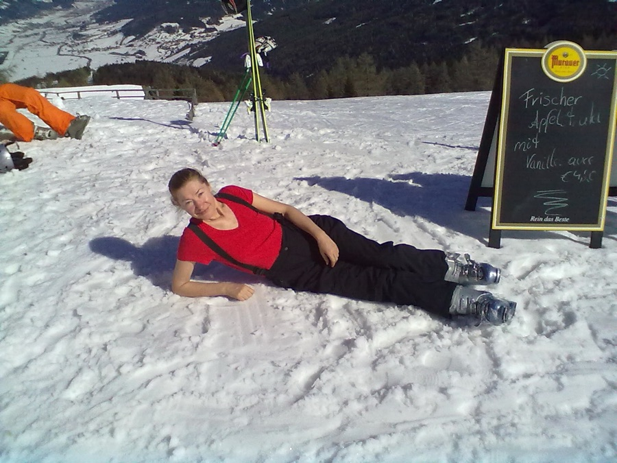

Doktor nauk humanistycznych w zakresie językoznawstwa
Doctor of Humanities in Linguistics
Doktorin der Geisteswissenschaften im Bereich Sprachwissenschaft
Liliana Madelska ukończyła polonistykę na Uniwersytecie Adama Mickiewicza w Poznaniu, tam też przez kilkanaście lat pracowała w Instytucie Językoznawstwa. Na Uniwersytecie Warszawskim studiowała logopedię, nauczanie języka polskiego jako obcego oraz psychologię dzieci niedosłyszących. Uczyła języka polskiego studentów ze wszystkich kontynentów. Ponad trzydzieści lat pracowała w Instytucie Slawistyki Uniwersytetu Wiedeńskiego. Jako logopeda opiekowała się polską szkołą przy Ambasadzie RP w Wiedniu. Uczestniczyła w pracach grupy ekspertów przy Ministerstwie Edukacji Narodowej, we współpracy z takimi organizacjami jak ORPEG Polonijne Centrum Nauczycielskie, Federalny Związek Nauczycieli Języka Polskiego w Niemczech czy Illinois State Board of Education. Prowadzi wykłady na studiach podyplomowych dla logopedów oraz dla nauczycieli języka polskiego jako obcego, a także szkolenia i warsztaty dla rodziców i nauczycieli polskich w Polsce i za granicą, m.in. w Austrii, Niemczech, Wielkiej Brytanii, Irlandii, we Włoszech i w USA.
Efektem współpracy ze szkołami polskimi za granicą są tablice Bliźniacze słowa oraz komplet materiałów do ćwiczenia percepcji i wymowy Posłuchaj, jak mówię, na który składają się Podręcznik ucznia, Poradnik dla rodziców i nauczycieli oraz film dydaktyczny Powiedz mi, co widzisz.
Jest autorem wielu książek i artykułów z dziedziny lingwistyki. Jej podręczniki z cyklu Odkrywamy język polski. Gramatyka dla uczących (się) języka polskiego ukazały się w wersji polskiej, angielskiej, dwóch wersjach niemieckich oraz w wersji rosyjskiej; zachęcają one uczniów do samodzielnej pracy i do refleksji nad językiem. Podręczniki te są polecane zarówno do pracy w szkołach, jak i na uczelniach w Polsce i poza jej granicami.
Rozprawa doktorska Liliany Madelskiej uzyskała nagrodę Polskiego Towarzystwa Fonetycznego (1989). Jest ona laureatem polonijnej nagrody Złote Sowy (2007), otrzymała też wyróżnienie Polonicum Uniwersytetu Warszawskiego (2013).
Liliana Madelska, Bliźniacze słowa. Test przesiewowy do badania dojrzałości szkolnej w zakresie percepcji i wymowy dzieci wielojęzycznych
Liliana Madelska, Posłuchaj, jak mówię. Poradnik dla rodziców i nauczycieli
Liliana Madelska, Justyna Wojciechowska (red. nauk.), Dziecięce poznawanie świata. Mowa i jej rozumienie
Liliana Madelska, Hans Christian Luschützky, Alt : älter versus starzy : starsi. Der diskrete Charme der AlternationenDE
Liliana Madelska, How to Mumble. The Textual Conditioning of Phonological ProcessesEN
Małgorzata Grys, Liliana Madelska, Wolfgang Zehetbauer, Tak się nie mówi – o poprawianiu błędów w wypowiedziach ustnych
Liliana Madelska studied Polish philology at Adam Mickiewicz University in Poznań, where she also worked for over a decade at the Institute of Linguistics. At the University of Warsaw she studied speech therapy, the teaching of Polish as a foreign language, and the psychology of hearing-impaired children. She has taught Polish to students from every continent. For more than thirty years she worked at the Institute of Slavic Studies at the University of Vienna. As a speech therapist, she cared for the Polish school at the Polish Embassy in Vienna. She took part in the work of an expert group at the Polish Ministry of National Education, in cooperation with organizations such as ORPEG's Polish Teachers' Centre, the Federal Association of Polish Language Teachers in Germany, and the Illinois State Board of Education. She lectures in postgraduate programmes for speech therapists and for teachers of Polish as a foreign language, and leads training sessions and workshops for Polish parents and teachers in Poland and abroad, including in Austria, Germany, the United Kingdom, Ireland, Italy, and the USA.
Her collaboration with Polish schools abroad produced the Bliźniacze słowa (Twin Words) charts and the complete set of perception- and pronunciation-training materials Posłuchaj, jak mówię (Listen to How I Speak), comprising a Student's Book, a Guide for Parents and Teachers, and the educational film Powiedz mi, co widzisz (Tell Me What You See).
She is the author of numerous books and articles in linguistics. Her textbook series Odkrywamy język polski. Gramatyka dla uczących (się) języka polskiego (Discovering Polish: Grammar for Learners/Teachers of Polish) has appeared in Polish, English, two German editions, and Russian; the books encourage students toward independent work and reflection on language. They are recommended for use both in schools and at universities in Poland and abroad.
Liliana Madelska's doctoral dissertation was awarded a prize by the Polish Phonetic Society (1989). She is a laureate of the Polish community's Złote Sowy (Golden Owls) award (2007) and also received a distinction from the Polonicum Centre at the University of Warsaw (2013).
Liliana Madelska, Bliźniacze słowa. Test przesiewowy do badania dojrzałości szkolnej w zakresie percepcji i wymowy dzieci wielojęzycznychPL
Liliana Madelska, Posłuchaj, jak mówię. Poradnik dla rodziców i nauczycieliPL
Liliana Madelska, Justyna Wojciechowska (eds.), Dziecięce poznawanie świata. Mowa i jej rozumieniePL
Liliana Madelska, Hans Christian Luschützky, Alt : älter versus starzy : starsi. Der diskrete Charme der AlternationenDE
Liliana Madelska, How to Mumble. The Textual Conditioning of Phonological Processes
Małgorzata Grys, Liliana Madelska, Wolfgang Zehetbauer, Tak się nie mówi – o poprawianiu błędów w wypowiedziach ustnychPL
Liliana Madelska studierte Polonistik an der Adam-Mickiewicz-Universität in Posen, wo sie auch mehr als zehn Jahre am Institut für Sprachwissenschaft tätig war. An der Universität Warschau studierte sie Logopädie, die Didaktik des Polnischen als Fremdsprache sowie Psychologie hörgeschädigter Kinder. Sie unterrichtete Polnisch für Studierende von allen Kontinenten. Mehr als dreißig Jahre war sie am Institut für Slawistik der Universität Wien tätig. Als Logopädin betreute sie die polnische Schule bei der Botschaft der Republik Polen in Wien. Sie wirkte in einer Expertengruppe beim polnischen Ministerium für nationale Bildung mit, in Zusammenarbeit mit Organisationen wie dem Polnischen Lehrerzentrum von ORPEG, dem Bundesverband der Polnischlehrer in Deutschland oder dem Illinois State Board of Education. Sie hält Vorlesungen in postgradualen Studiengängen für Logopäden sowie für Lehrkräfte des Polnischen als Fremdsprache und leitet Fortbildungen und Workshops für polnische Eltern und Lehrkräfte in Polen und im Ausland, u. a. in Österreich, Deutschland, Großbritannien, Irland, Italien und den USA.
Aus der Zusammenarbeit mit polnischen Auslandsschulen entstanden die Tafeln Bliźniacze słowa (Zwillingswörter) sowie das vollständige Materialpaket zum Wahrnehmungs- und Aussprachetraining Posłuchaj, jak mówię (Hör, wie ich spreche), bestehend aus einem Schülerbuch, einem Ratgeber für Eltern und Lehrkräfte sowie dem Lehrfilm Powiedz mi, co widzisz (Sag mir, was du siehst).
Sie ist Autorin zahlreicher Bücher und Artikel aus dem Bereich der Linguistik. Ihre Lehrwerkreihe Odkrywamy język polski. Gramatyka dla uczących (się) języka polskiego (Wir entdecken die polnische Sprache. Grammatik für Polnischlernende) erschien auf Polnisch, Englisch, in zwei deutschen Fassungen sowie auf Russisch; die Bücher ermuntern Lernende zu selbstständiger Arbeit und zur Reflexion über Sprache. Sie werden sowohl für den Einsatz an Schulen als auch an Hochschulen in Polen und im Ausland empfohlen.
Die Doktorarbeit von Liliana Madelska wurde von der Polnischen Phonetischen Gesellschaft ausgezeichnet (1989). Sie ist Preisträgerin der polonischen Auszeichnung Złote Sowy (Goldene Eulen, 2007) und erhielt zudem eine Auszeichnung des Polonicum-Zentrums der Universität Warschau (2013).
Liliana Madelska, Bliźniacze słowa. Test przesiewowy do badania dojrzałości szkolnej w zakresie percepcji i wymowy dzieci wielojęzycznychPL
Liliana Madelska, Posłuchaj, jak mówię. Poradnik dla rodziców i nauczycieliPL
Liliana Madelska, Justyna Wojciechowska (Hrsg.), Dziecięce poznawanie świata. Mowa i jej rozumieniePL
Liliana Madelska, Hans Christian Luschützky, Alt : älter versus starzy : starsi. Der diskrete Charme der Alternationen
Liliana Madelska, How to Mumble. The Textual Conditioning of Phonological ProcessesEN
Małgorzata Grys, Liliana Madelska, Wolfgang Zehetbauer, Tak się nie mówi – o poprawianiu błędów w wypowiedziach ustnychPL